扉页
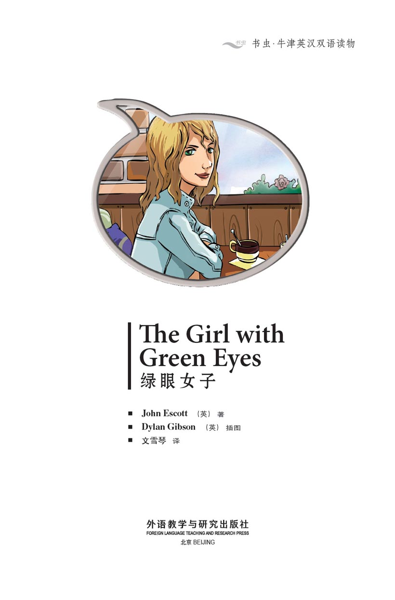
版权页
京权图字：01-2013-7801
Published by arrangement with Oxford University Press for sale in the People's Republic of China only and not for export therefrom. This edition is for sale in the mainland of China only, excluding Hong Kong SAR, Macao SAR and Taiwan.
© Oxford University Press 2012
Oxford is a registered trademark of Oxford University Press
图书在版编目（CIP）数据
绿眼女子：英汉对照／（英）埃斯科特（Escott, J.）著；（英）吉布森（Gibson, D.）绘；文雪琴译．—北京：外语教学与研究出版社，2013.11
（书虫·牛津英汉双语读物）
书名原文：The girl with green eyes
ISBN 978-7-5135-3776-6
Ⅰ．①绿… Ⅱ．①埃…②吉…③文… Ⅲ．①英语—汉语—对照读物②短篇小说—英国—现代 Ⅳ．①H319.4：I
中国版本图书馆CIP数据核字（2013）第272356号
出版人 蔡剑峰
责任编辑 杨镇明
封面设计 蔡 颖
出版发行 外语教学与研究出版社
社 址 北京市西三环北路19号（100089）
网 址 http://www.fltrp.com
版 次 2013年12月第1版
书 号 ISBN 978-7-5135-3776-6
制售盗版必究 举报查实奖励
版权保护举报电话：（010）88817519
内容简介
内容简介
格雷格在纽约的谢普顿酒店工作。酒店对面有一家咖啡馆，每天下班后，格雷格都要去那里喝上一杯咖啡。他每天都会在那里看见一个女子，她有一双漂亮的绿色眼睛。有一天，格雷格坐到那女子的旁边。她说自己叫凯茜，并且请求他的帮助。
凯茜告诉格雷格自己是一名画家。她说她的继父拿走了她的写生簿，她想把它们拿回来。她还说她的继父现在就住在谢普顿酒店里。格雷格答应帮忙。
格雷格拿到了写生簿并把它们交给了凯茜。他很高兴，凯茜也很开心。
但是，紧接着格雷格的朋友迈克找到了他，说他有麻烦了。警察要找他谈话，并且就在格雷格的公寓里等候着。
到底出了什么岔子？为什么警察要找格雷格谈话？
THE GIRL WITH GREEN EYES
THE GIRL WITH GREEN EYES
Greg works at the Shepton Hotel in New York. Opposite the hotel there is a coffee shop, and Greg goes there for a coffee every day after work. Every day he sees a girl there with beautiful green eyes. One day, Greg sits next to the girl. She tells him her name is Cassie, and she asks him for help.
Cassie tells Greg that she is an artist. She says her stepfather has her sketch books, and Cassie wants them back. She also says her stepfather is staying at the Shepton Hotel, so Greg agrees to help.
Greg is very happy when he gets the sketch books and gives them to Cassie. Cassie is very happy, too.
But then Greg meets his friend Mike. Mike tells Greg that he's in trouble. The police want to talk to him and are waiting at his apartment.
What is wrong? Why do the police want to talk to Greg?
目录
The Girl with Green Eyes
The Girl with Green Eyes
Greg is a porter at the Shepton Hotel in New York. After work, he always goes for a coffee across the street. A girl is sitting in the coffee shop, near the window.
'It's her again!' thinks Greg. 'She's here every afternoon. I'm going to say hello.'
Greg goes into the coffee shop and gets a coffee. Then he goes across to the girl's table.
'Hi!' he says. 'I'm Greg. Can I sit with you?'

'OK,' she says. 'I'm Cassie.'
'I come here for a coffee every day after work,' says Greg. 'I'm a porter at the Shepton Hotel.' He smiles. 'You have beautiful green eyes.'
'Have I?' she says. She doesn't smile.
'Is something wrong, Cassie?' he asks. 'You don't look very happy.'
'It – it's nothing,' she says.
'Tell me,' says Greg. 'Maybe I can help?'
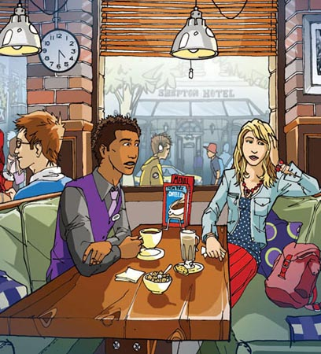
'Well...' she begins.
'Go on,' says Greg.
'My stepfather is staying at the Shepton Hotel,' she says. 'He has my sketch books. I'm an artist. When I ask him to give them to me he says, "No. I want you to come back home to Boston." But I don't want to go back to Boston. He's not nice.'
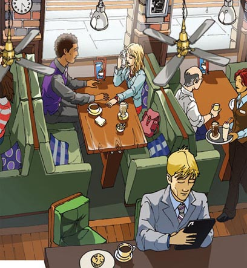
'How long is he going to be at the hotel?' asks Greg.
'Two more days,' says Cassie. 'He's in room 724.'
'Maybe I can get the sketch books for you,' says Greg. 'Maybe I can get into his room.'
'Can you?' she says.
'Meet me here tomorrow afternoon at 4.30,' says Greg.
'OK, thank you!' says Cassie. 'Thank you very much.' She looks at her watch. 'I've got to go now. See you tomorrow.'
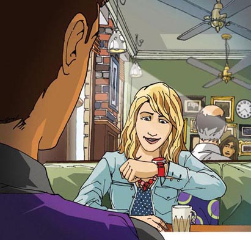
When Cassie gets back to her hotel room, she makes a telephone call.
'Hello,' she says. 'It's me. It's OK, the boy's going to do it... Yes, I'm going to get them from him tomorrow afternoon... OK, I can meet you there the morning after, at 10 am. Don't forget to bring the money – two thousand dollars.'
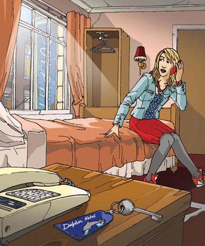
Next morning, Greg arrives at work early. He goes to find room 724.
'I have to wait for Cassie's stepfather to go out,' he thinks. 'I don't know his name, but it doesn't matter.'
Greg watches the door of room 724. He sees the girl come to clean the rooms.
Some minutes later, a man comes out of room 724.
'That must be Cassie's stepfather!' thinks Greg.
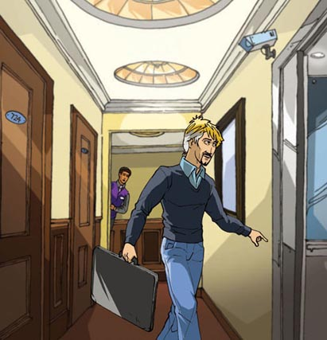
He waits for the man to leave, and for the cleaning girl to go into room 724.
'I need to look in the room,' he thinks.
Greg waits for the girl to leave the bedroom, then he goes into the room and begins to look for the sketch books.
'I must be quick,' he thinks. 'Where are they?'
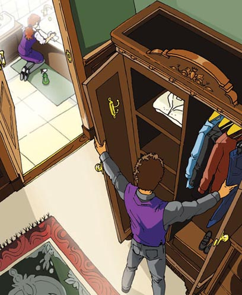
Suddenly, Greg sees the sketch books by the bed.
'Got them!' he thinks. He begins to look at the pictures. 'Wow! Cassie is a great artist! These are good!'
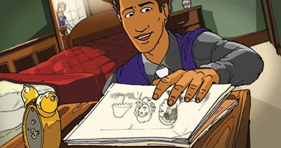
Greg is leaving the room when he hears the cleaning girl call out to him.
'Hey!' she says. 'What are you doing? Come back!'
Greg does not stop.
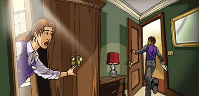
Greg finishes work that afternoon and leaves the hotel through a door in the next street. When he gets near the front of the hotel, he sees the man from room 724.
'That's him again!' thinks Greg. 'That's Cassie's stepfather.'
Greg waits for the man to go into the hotel, then he goes to the coffee shop.
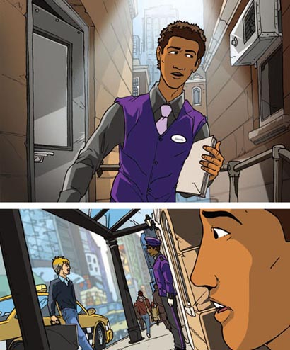
Cassie is at the same table in the coffee shop.
Greg gets a coffee and goes to sit with her.
'I have them,' he says, and he puts the sketch books on the table.
'That's great!' says Cassie. 'How can I thank you, Greg?'
'You can meet me later,' he says. 'After I go home and change out of my porter's uniform.'
'I'm sorry, Greg,' says Cassie. 'I can't tonight. Maybe tomorrow night.'
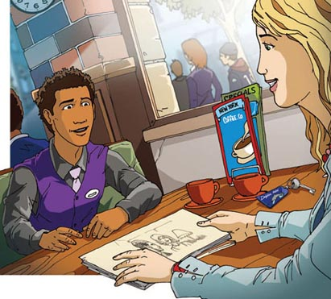
'OK,' says Greg. 'Tomorrow night. We can get something to eat, first.'
'Yes, OK,' says Cassie. 'I have to go now, but meet me here tomorrow evening at six o'clock.'
Cassie gets up, ready to leave.
'Don't forget your key,' says Greg.
'Oh – er – thanks,' says Cassie. She takes it from him quickly. 'See you tomorrow.'
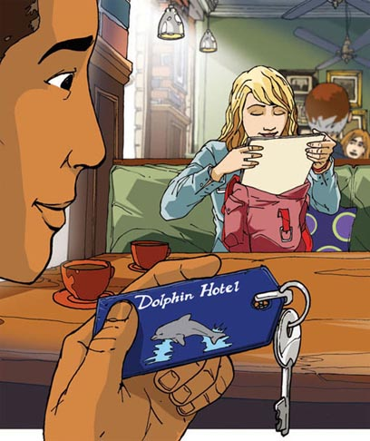
Greg is finishing his coffee when he sees his friend, Mike.
'You're in trouble, Greg,' says Mike. 'Jake Russo's sketch books are not in his room – room 724. And there are CCTV pictures of you coming from that room.'
'Wh – who is Jake Russo?' asks Greg. Suddenly he's not feeling very well.
'An artist,' says Mike. 'His pictures sell for thousands of dollars. And his sketch books sell for thousands, too.'

'Do you have them?' asks Mike.
'No – er – a girl has them,' says Greg.
'What girl?' asks Mike.
'A girl with green eyes,' says Greg. And he tells Mike about Cassie and her stepfather.
'But it's not true!' says Mike, when Greg finishes speaking. 'Jake Russo doesn't have a wife or a stepdaughter. You have to find that girl and get the sketch books, Greg. And you have to do it before the police find you!'
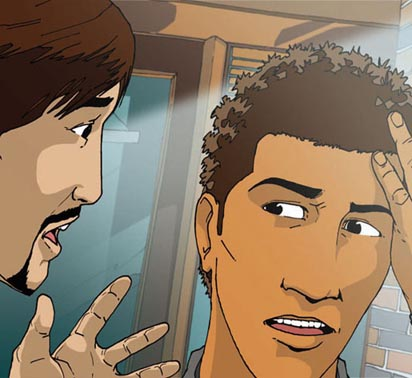
Greg walks home to his one-room apartment.
'How am I going to find her?' he thinks. 'She has Jake Russo's sketch books now, so she's not going to meet me again. Is she going to sell them for a lot of money?'
There is a police car in the street, next to Greg's apartment.
'Oh, no!' he thinks. 'They're waiting for me. I can't get into my apartment now.'
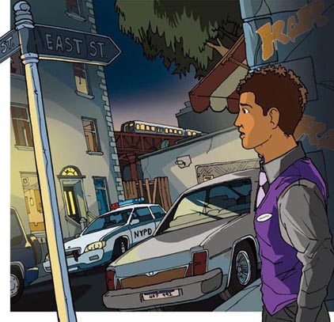
That night, Greg sleeps on a train in the subway. But early the next morning...
'Hey, you!' says a man. He's the subway cleaner. 'Get up! You can't sleep here all day!'
'Sorry,' says Greg.
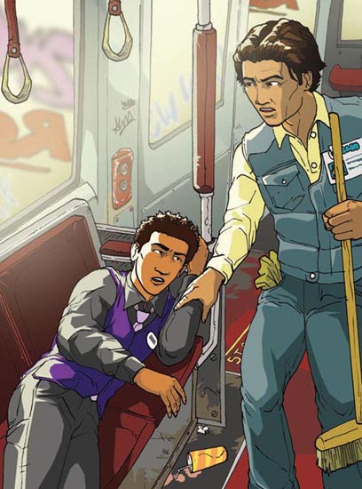
People are arriving to get their trains now. One of them stops and looks at a photograph in his newspaper – and then at Greg.
'It's him,' thinks the man. 'It's the young man in the newspaper photograph. The police are looking for him.'
Suddenly, Greg sees the man looking at him. And he sees his picture on the front of the man's newspaper.
'I have to get out of here quickly!' he thinks.
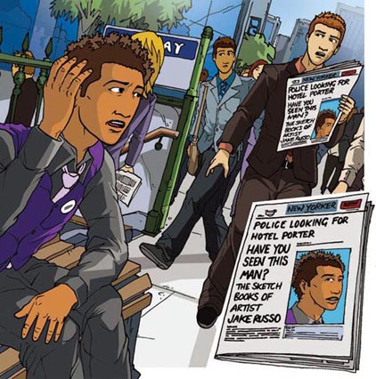
The man with the newspaper finds a policeman.
'It's him!' he tells the policeman. 'The hotel porter!'
'Hey, you!' the policeman calls to Greg.
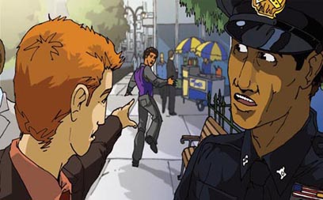
Greg runs.
'Stop!' calls the policeman.
Greg doesn't stop.
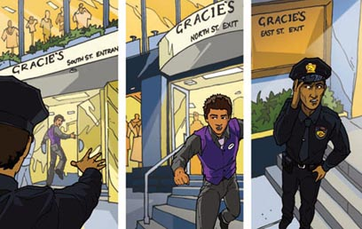
'I have to get out of this uniform,' thinks Greg. 'People know I'm the porter. Maybe Mike can give me something different to wear.'
When he gets to Mike's apartment, Mike opens the door. 'I need something to wear,' Greg tells him. 'I can't go back to my apartment. My picture's in the newspaper, and —'
'Yes, I know,' says Mike. 'It's OK. Come in.'
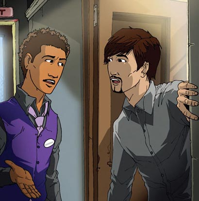
'Where's the girl?' asks Mike. 'Do you know?'
'No,' says Greg.
'What can you remember about her?' says Mike. 'There must be something to help you find her.'
'Yes!' Greg says, suddenly. 'Her key! A key to a room in the Dolphin Hotel! It's a small, cheap hotel near 42nd Street. She must be staying there. What's the time?'
'Nearly nine o'clock,' says Mike.
'Maybe she's there now,' says Greg. 'I have to go! Thanks, Mike.'

Twenty minutes later, Greg is near the Dolphin Hotel.
'Am I too late?' he thinks.
Suddenly, Greg sees Cassie come out of the hotel.
'Cassie!' he calls. 'Wait! I have to talk to you!'
Cassie sees him, but she doesn't stop. There is a car waiting for her. She says something to the driver and gets into it quickly.
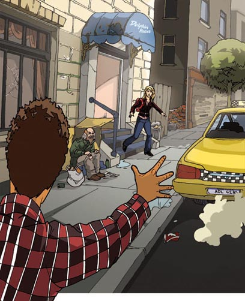
'Oh, no!' says Greg.
'Pier 83,' says an old man in the street.
Greg looks at him. 'What?'
'The girl is going to Pier 83, West 42nd Street, for the Circle Line boat,' says the old man.
Greg smiles. 'Thanks!' he says. And he begins to run.
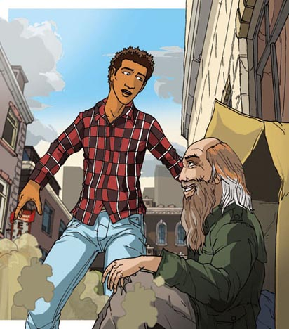
Greg runs all the way to Pier 83. People are getting on to the boat, and he gets a ticket.
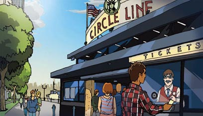
On the boat, Greg looks for Cassie. But a woman with a newspaper is looking at him.
'It's the young man in the picture!' she tells the man with her. 'Call the police, Eddie.'
The man gets his phone and calls the police.
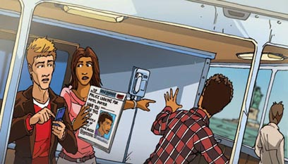
Some time later, Greg sees Cassie. She is talking to a man. But Greg does not see two policemen get on the boat.
They quickly find Greg. 'Where are Jake Russo's sketch books?' the first policeman asks him.
'I don't have them!' says Greg. 'You don't want me! You want her! She has the sketch books.'
'Hey, look! He's right,' says the second policeman.
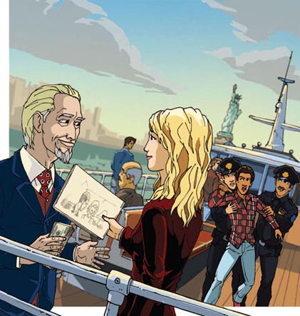
The two policemen move quickly to Cassie and the man.
'I don't understand,' says Cassie. 'How...?'
'The two of you are coming with us,' says one of the policemen. 'You're in trouble.'
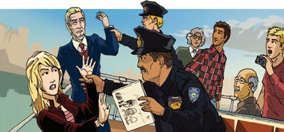
Later, Greg and a policeman take the sketch books back to the hotel. Jake Russo is very happy to see them again.
'I'm sorry, Mr Russo,' says Greg, and tells him everything.
'It's OK,' says the artist, smiling. 'But stay away from girls with beautiful green eyes!'
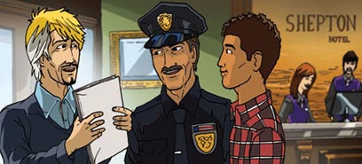
GLOSSARY 词汇表
GLOSSARY
词汇表
apartment n. a room or group of rooms where you can live 公寓房间；公寓套间
artist n. someone who paints, draws, or makes pictures 画家，美术家
boat n. a small ship 小船；（小的）轮船
clean v. make something free from dirt 使清洁，把……弄干净
coffee n. a hot drink 咖啡
dollar n. money used in America ($) 美元
hotel n. a building where you can pay to stay in a room 酒店，宾馆，旅馆
key n. you use this to lock and unlock a door 钥匙
newspaper n. where you can read about the things happening every day 报纸
pier n. a wall from the land into the sea where people get on and off boats （伸向海中的）突堤码头
police n. (pl.) the men and women who catch criminals 警察，警方
porter n. a man who carries your bags at a hotel （酒店的）行李员，行李搬运工
sell v. give someone something and get money for it 售卖，出售
sketch n. a quick drawing of something 素描，速写
stepfather n. a man who is not your father but who marries your mother 继父
subway n. American word for underground railway 〈美〉地铁
trouble n. something which causes a problem 麻烦，问题
uniform n. special clothes for a job 制服
ACTIVITIES 阅读练习
The Girl with Green Eyes
ACTIVITIES
阅读练习
ACTIVITIES
Before Reading
1 Look at the front cover of the book and answer these questions.
1) Where do you think the story happens?
a □ Japan
b □ America
c □ Spain
d □ Brazil
2) What do you think the story is about?
a □ children
b □ old people
c □ young people
d □ animals
2 Read the back cover of the book and answer these questions.
1) Where does Greg work?
2) What does Cassie tell Greg?
3) Do you think Greg is good or bad? Why?
4) Do you think Cassie is good or bad? Why?
ACTIVITIES
While Reading
1 Answer these questions.
1) What does Greg always do after work?
2) Who is sitting at a table near the window?
3) What does she want?
4) Who has got them?
5) Greg tells Cassie to meet him again. When?
2 Answer these questions.
1) Cassie goes back to her hotel room. What does she do next?
2) How much money does she want?
3) Which room does Greg watch?
4) Who goes into the room before Greg?
5) What does Greg find in the room?
3 Who says or thinks these words?
1) 'That's him again!'
2) 'Meet me here tomorrow evening at six o'clock.'
3) 'Don't forget your key.'
4) 'You're in trouble, Greg.'
5) 'Who is Jake Russo?'
4 Are these sentences true (T) or false (F)?
1) Greg gets a train home to his apartment.
T □／F □
2) There is a police car in the street, next to Greg's apartment.
T □／F □
3) Greg sleeps on a train.
T □／F □
4) A man sees Greg's picture on TV.
T □／F □
5) Greg sees the man looking at him.
T □／F □
5 Answer these questions.
1) What does the man with the newspaper do?
2) Why does Greg go to Mike's apartment?
3) What does Greg remember about his meeting with Cassie?
4) Where is the Dolphin Hotel?
5) What is waiting for Cassie near the hotel?
6 What happens in the end of the story? Tick Yes or No.
1) Greg follows Cassie's car in a different car.
Yes □／No □
2) Somebody tells Greg where Cassie is going.
Yes □／No □
3) The police find Cassie before Greg finds her.
Yes □／No □
4) Cassie sells the sketch books before Greg finds her.
Yes □／No □
5) Greg gives the sketch books back to Jake Russo.
Yes □／No □
ACTIVITIES
After Reading
1 Put these sentences in the right order.
a □ Cassie tells Greg about the sketch books.
b □ Mike tells Greg, 'You're in trouble.'
c □ Greg sleeps on a train in the subway.
d □ Greg sees the girl in the coffee shop.
e □ A woman on the boat sees Greg's picture in the newspaper.
f □ Greg tells Jake Russo everything.
g □ Greg watches the door of room 724.
h □ Greg goes to Mike's apartment.
i □ The man with the newspaper in the subway finds a policeman.
j □ Greg runs all the way to Pier 83.
k □ Greg waits for the cleaning girl to leave the bedroom.
l □ Cassie gets back to her hotel room and makes a phone call.
m □ Greg gives Cassie the sketch books.
2 Use these words to join the sentences together.
or through then to at
1) Greg is a porter. The Shepton Hotel in New York.
2) Greg leaves the hotel. A door in the next street.
3) Greg gets a cup of coffee. He goes to sit with Cassie.
4) Jake Russo doesn't have a wife. A stepdaughter.
5) Greg walks home. His one-room apartment.
3 Look at each picture and answer the questions.
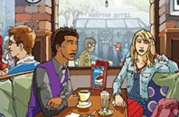
Where are Greg and Cassie?
Why is Cassie unhappy?
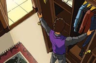
What is Greg looking for?
Why? Does he find them?
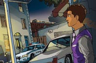
Why can't Greg go back to his apartment? What does he do?
What is Cassie doing? Why?
What happens next?
TRANSLATION 参考译文
TRANSLATION 参考译文
The Girl with Green Eyes
绿眼女子
格雷格是纽约谢普顿酒店的行李员。下班后，他总会去酒店对面的咖啡馆喝上一杯咖啡。咖啡馆里靠窗的座位上，坐着一个女孩。
“又是她！”格雷格想，“她每天下午都来。我要去跟她打个招呼。”
格雷格走进咖啡馆，要了一杯咖啡，然后走向女孩坐的桌子。
“嗨！”他说，“我叫格雷格。我能跟你坐一起吗？”
“可以。”她说，“我叫凯茜。”
“我每天下班后都要来这里喝一杯咖啡。”格雷格说，“我是谢普顿酒店的行李员。”他微笑着又说：“你有一双漂亮的绿色眼睛。”
“是吗？”她说，脸上并无笑容。
“有什么事吗，凯茜？”他问，“你看起来不太高兴。”
“是——也没什么。”她说。
“告诉我吧。”格雷格说，“也许我能帮上忙？”
“嗯……”她开口了。
“说说吧。”格雷格说。
“我的继父正住在谢普顿酒店里。”她说，“他拿走了我的写生簿。我是个画家。我让他还给我，但他说，‘不行，我要你回波士顿，回家来。’可我不想回波士顿。他对我不好。”
“他会在酒店住多久？”格雷格问。
“还会再住两天。”凯茜说，“他住在724房间。”
“也许我能帮你把那些写生簿拿回来，”格雷格说，“也许我能进入他的房间。”
“你能吗？”她问。
“明天下午4:30在这里等我。”格雷格说。
“好的，谢谢你！”凯茜说，“非常感谢。”她看了看自己的手表，“现在我得走了，明天见。”
凯茜回到自己住的旅馆房间，打了个电话。
“喂，”她说，“是我。搞定了，那个男孩会去做的……对，我明天下午就能从他手里拿到东西……好的，我后天上午10点在那里跟你会面。别忘了把钱带上——两千美元。”
第二天上午，格雷格一早便来上班。他去找724房间。
“我得等凯茜的继父先出去。”他想，“我不知道他叫什么名字，不过这无所谓。”
格雷格盯着724房间的门。他看见清洁女工开始打扫房间了。
几分钟后，一个男人从724房间走了出来。
“这准是凯茜的继父！”格雷格想。
他等着那男人离开，又等着清洁女工进了724房间。
“我得去房间里找。”他想。
格雷格等清洁女工离开卧室后，便闪身进入房间，开始翻找写生簿。
“我必须快点儿。”他想，“它们在哪里呢？”
突然，格雷格在床边看见了那些写生簿。
“找到了！”他想。他开始看那些画：“哇！凯茜是个了不起的画家！画得真棒！”
格雷格离开房间时，听见清洁女工朝他大声叫喊起来。
“嘿！”她嚷道，“你在干什么？回来！”
格雷格没有停步。
那天下午，格雷格下班后，从位于另一条街的侧门离开了酒店。走到酒店正门附近时，他看见了住在724房间的那个男人。
“又是他！”格雷格想，“那是凯茜的继父。”
待那男人进了酒店，格雷格才向咖啡馆走去。
咖啡馆里，凯茜坐在昨天那张桌子旁。
格雷格要了一杯咖啡后，走过去坐在她对面。
“我拿到了。”他说，然后把写生簿都放在桌子上。
“太好了！”凯茜说，“我该怎么感谢你呢，格雷格？”
“一会儿你可以跟我约会。”他说，“先等我回家换掉这身行李员制服。”
“对不起，格雷格，”凯茜说，“今晚不行。要不明天晚上吧？”
“好吧，”格雷格说，“那就明天晚上。我们可以先吃点东西。”
“是啊，好的。”凯茜说，“我现在得走了，不过明天晚上6点钟要在这儿等我。”
凯茜站起来，准备离开。
“别忘了你的钥匙。”格雷格说。
“噢——嗯——谢谢。”凯茜说。她很快地接过钥匙：“明天见。”
格雷格快喝完咖啡时，看到了自己的朋友迈克。
“你惹上麻烦了，格雷格。”迈克说，“杰克·拉索放在房间里的写生簿不见了——是724房间。闭路电视监控里有你从那个房间里出来的画面。”
“什么——谁是杰克·拉索？”格雷格问道，他突然有种不祥的感觉。
“一位画家。”迈克说，“他的画要卖几千美金一幅。他的写生簿的价格也得好几千。”
“在你手里吗？”迈克问。
“不在——嗯——在一个女孩手里。”格雷格说。
“什么样的女孩？”迈克问。
“一个长着绿色眼睛的女孩。”格雷格说。他把凯茜跟她继父的事情告诉了迈克。
“这些全是胡扯！”听完格雷格的话，迈克说，“杰克·拉索没有妻子，也没有继女。格雷格，你得找到那个女孩，把写生簿拿回来，而且你必须在警察找到你之前搞定这件事！”
格雷格向他所住的单间公寓走去。
“我怎么才能找到她呢？”他思考着，“现在她拿到了杰克·拉索的写生簿，不会再来见我了。她会把它们拿去卖一大笔钱吗？”
在格雷格的公寓附近，一辆警车停在街上。
“呀，不好！”他想，“他们在等我。我现在不能回家。”
那天晚上，格雷格在地铁车厢里睡了一夜。但第二天一大早……
“嘿，说你呢！”一个男人——他是地铁清洁工——说，“快起来！你不能在这里睡一整天！”
“对不起。”格雷格说。
此时来乘坐地铁的人们陆续上车了。其中有个人停下来看了看手中报纸上的照片，然后又看了看格雷格。
“就是他。”那个男人想，“他就是报纸照片上的那个年轻人。警察正在通缉他。”
突然，格雷格发现那个男人正在打量自己。他还看到那个男人拿的报纸头版上有自己的照片。
“我得赶紧离开这儿！”他想。
那个拿着报纸的男人找到了一名警察。
“就是他！”他告诉警察，“那个酒店行李员！”
“嘿，你！”警察朝格雷格喊道。
格雷格拔腿就跑。
“站住！”警察喊道。
格雷格没有停下来。
“我得换掉这身制服。”格雷格想，“别人知道我就是那个行李员。也许迈克能给我找些别的衣服。”
他来到迈克的公寓，迈克开了门。“我需要一些衣服。”格雷格告诉他，“我不能回自己的公寓。我的照片上了报纸，还有——”
“是的，我知道。”迈克说，“没问题，进来吧。”
“那个女孩在哪里？”迈克问，“你知道吗？”
“不知道。”格雷格说。
“关于她的事你还记得什么？”迈克说，“肯定有些线索能帮你找到她。”
“对了！”格雷格突然说道，“她的钥匙！一把海豚旅馆的房间钥匙！那是家廉价的小旅馆，在第42街附近。她肯定住在那儿。现在几点了？”
“快9点了。”迈克说。
“她可能现在就在那儿。”格雷格说，“我得走了！谢谢你，迈克。”
20分钟后，格雷格赶到了海豚旅馆附近。
“我来得太晚了吗？”他想。
突然，格雷格看到凯茜正从旅馆里出来。
“凯茜！”他喊道，“等等！我得跟你谈谈！”
凯茜看到了他，但她并没有停下脚步。有辆车正等着她。她跟司机说了几句什么，然后飞快地上了车。
“呀，糟了！”格雷格说。
“83号码头。”街边的一位老人说。
格雷格看了看他：“什么？”
“那个女孩要去83号码头，在第42街西，她要上环线船。”老人说。
格雷格笑了。“谢谢！”他说。然后他开始奔跑起来。
格雷格一路跑到了83号码头。乘客们正在登船，他买了张票。
上船后，格雷格便寻找凯茜。这时一个拿着报纸的女人正打量着他。
“这就是照片上的那个年轻人！”她告诉跟她在一起的男子，“快报警，埃迪。”
男子拿起手机，给警察拨打了电话。
过了一会儿，格雷格看到了凯茜，她在同一个男子说话。但此时有两名警察也上了船，格雷格没看到。
警察很快就找到了格雷格。“杰克·拉索的写生簿在哪里？”一个警察问他。
“不在我这里！”格雷格说，“你们要抓的不是我！是她！她拿了写生簿。”
“嘿，瞧啊！他说得对。”另一个警察说。
两名警察迅速冲到凯茜和那个男子身边。
“我不明白。”凯茜说，“怎么啦……？”
“你们两个跟我们走一趟。”一个警察说，“你们有麻烦了。”
之后，格雷格和一名警察把写生簿送回了酒店。杰克·拉索见到自己的写生簿失而复得，非常高兴。
“对不起，拉索先生。”格雷格说，并把事情的来龙去脉都告诉了他。
“没关系，”画家笑着说，“不过对长着漂亮的绿色眼睛的女孩，要离得远一点！”
封底
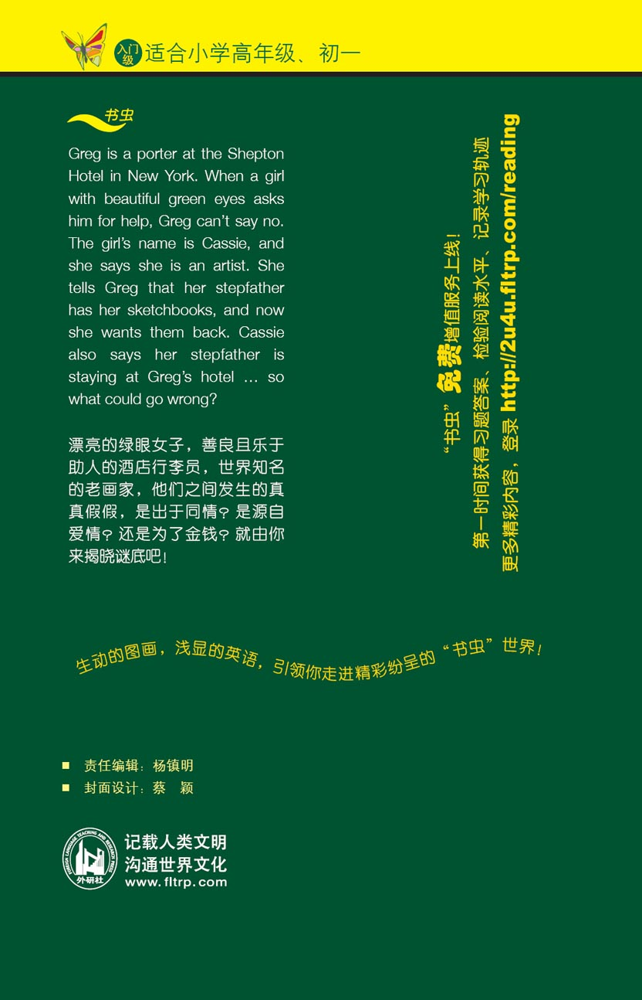